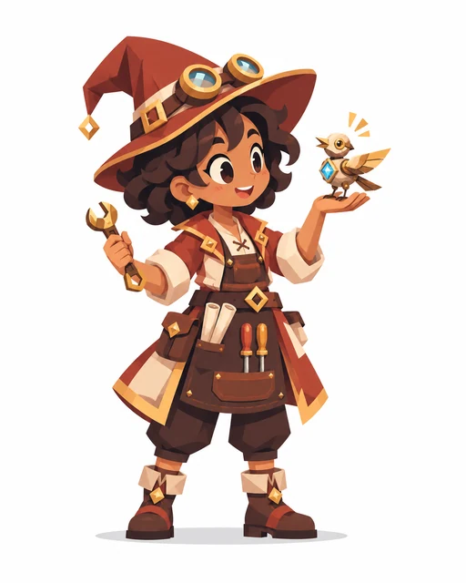
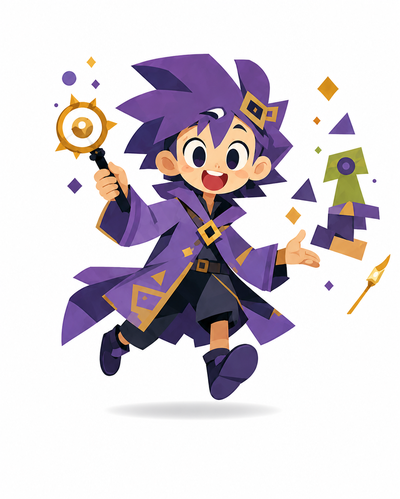
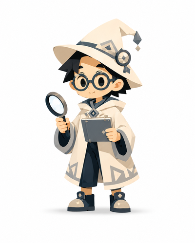

Wizard ที่เพื่อนแชร์มาให้คุณ
Artificer
Family E · Magic & Combat
ผู้สร้างเครื่องมือและพัฒนาต้นแบบจากการทดลอง
“เปลี่ยนพลังให้กลายเป็นการกระทำ”

Learning Signature
สามมุมการเรียนรู้ในลายเซ็นของ Wizard สายนี้



เปลี่ยนความคิดเป็นสิ่งประดิษฐ์ที่ใช้งานได้
นี่คือลายเซ็นของ Wizard สายนี้ ไม่ใช่คะแนนส่วนตัวของผู้แชร์ ทุกคนเรียนรู้ได้หลายแบบ และผลนี้ไม่ใช่การวินิจฉัยบุคลิกภาพ